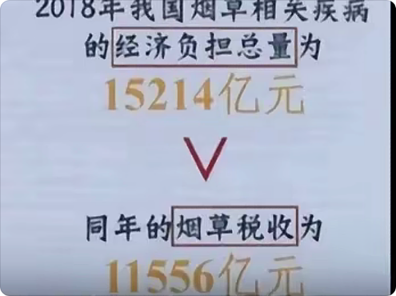
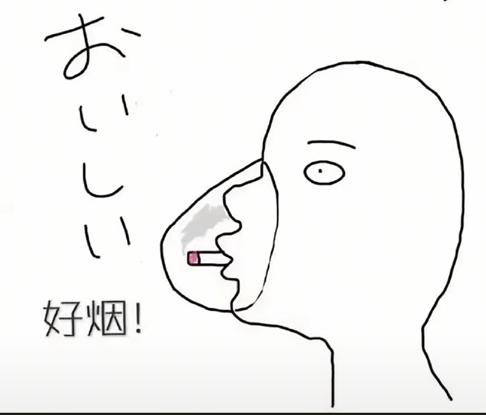
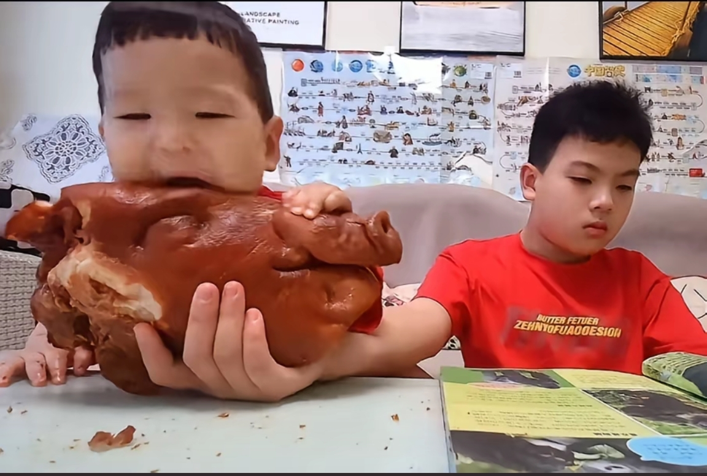
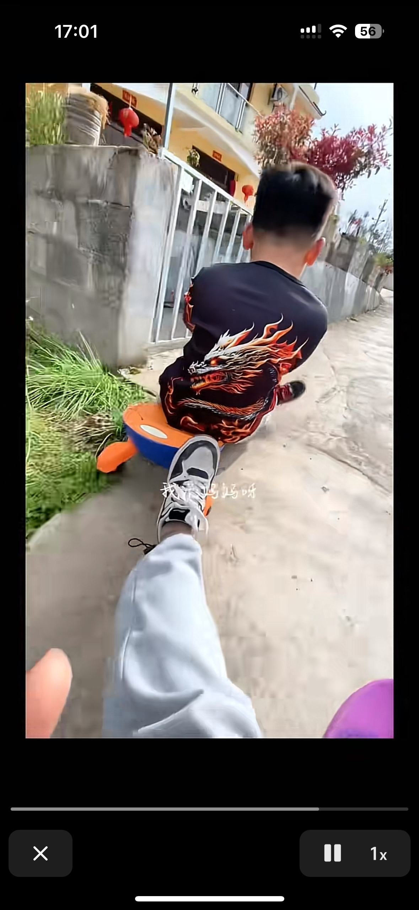
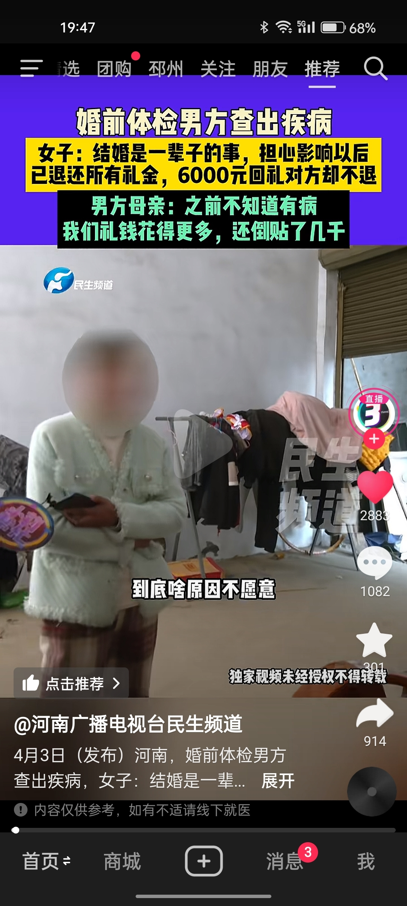

我是人，我同意全国普及
先从大学开始推广可以吗
军费哥我问你个事[捂脸] 
建议从高铁站台开始实施 我倒是要看看少抽5分钟烟是不是会死人
建议烟民人手一个[憨笑][比心] 
其实最严重的是在站台等高铁的时候[憨笑][赞]
真的，一个人抽烟，周围十米的空气感觉都被污染了
能不能全国实行[憨笑][比心]
@HYAN 走在路上就是[憨笑]抽烟的不一定过肺但是我肯定过肺了[憨笑]
建议在大学校园也实施哈，下课路上闻一路的二手烟[憨笑]
先从高铁站开展。。
哥哥:我会继承家族的一切，包括你，我愚蠢的弟弟
哥哥：读万卷书 弟弟：吃万头猪 
长大以后的样子。[偷笑]
一位继承大统，一位继承大桶[泪奔]
哥哥和妹妹=陌生人 姐姐和妹妹=仇人 姐姐和弟弟=主人和忠实的仆人 哥哥和弟弟=农场主和他的奴隶[微笑]
坏了，给她生了两个省事的孩子了[流泪]
哇，他们在各自的年纪做着正确的事情。在该好好读书的年纪好好读书，在该好好吃饭的年纪好好吃饭
很佩服这群人，义务的自费的完成这样的工作。
我一开始都不慌，直到这里我开始慌了[黑脸] 
他甚至都回头来看你
我找工作看见台球馆的招聘，薪资1w以上。身高要160以上，90斤左右，穿裙子，会化妆会打扮开朗漂亮[呆无辜]我就知道这钱它不是我能挣的
去农村打假小卖铺我是万万没有想到 [捂脸]
那个铁头好像是判了10多年[翻白眼][翻白眼]是不是真的
听得鸭肠寸断，感觉自己是两斤周黑鸭[流泪]
没回，就是看上了
但有一刻，口水的确喷在了我们的脸上[憨笑]
听懂的鸭已经哭了
多掌握一门外语是多么……冒昧的一件事[九转大肠]
妈呀 这浩轩不得高兴坏了[憨笑]
你这牙各有各的姓名吗[泪奔]
自己笑了四天才发出来的吧[捂脸]
主播你等等其实我每个省都有号
这让浩轩看见了，不得迷成智障啊[宕机]
一刹那，我分不清你脸上的是泪水还是唾液[捂脸][捂脸]
不是啊哥 等了四天你发这个?[黑脸]
现在：可能是我贱吧[黑脸]
只有音乐没亏待我这个90后
主包，听抖音功能咱开开呗，太适合睡觉了
总觉得08年是个分界点，过了零八年乐坛就开始没落了[泣不成声]
认为小米无责的举手🙋♂️
国内第一个出来负责人的车企！给雷总点赞[赞]
雷总一次次申明不能离手辅助驾驶，结果还是挑战脱离手，挺小米雷总[赞][赞][赞]
我觉得小米真的很智能，最起码的你出事故了他的公司立马都知道了，主动联系你车主，你换成其他的车，你出多少车祸，公司会主动给你车主联系呀
说的一针见血。国家必须保护国家企业
我甚至觉得大女儿就是庄父害死的[尬笑][尬笑][尬笑]怕是知道了什么，然后给弄死了
如果生的是个儿子，说不定就能保住 没想到是个女儿，正好借机把他送到赣州
所以单位里被霸凌被排挤的根本原因就是直属领导，他想打压你你或者就希望下面互斗，其他人不过是他的枪罢了
是不是这个 
大专还要造假哈哈哈哈哈哈哈哈[九转大肠]
这办法太损了，关键还是心平气和的说出来的，果然律师不能得罪呀[捂脸]
“……然后又说比较累呀什么的。”“哦，那是假话”
划重点：如何公开合法合理将对方丑事广而告之[不失礼貌的微笑][不失礼貌的微笑][不失礼貌的微笑]
我就喜欢郭律师这种刨根问底的性格
律：他会不会是心理原因？ 女：他说是巴拉巴拉。。。等心理原因 律：哦，那是假话[捂脸]
郭律想听八卦的心很明显了，往常他都说“我们不连受害者[捂脸]”
一听到八卦 整个人都趴在桌子上了 要爬出来了[捂脸]
男人过了25就65了[我想静静]
郭律 你给我一种和姐妹聊八卦的感觉[宕机][宕机]
如果三金啥的买早了几个月，现在全退回去，说不定对方还挣小几千块呢……
《我们只连嫌疑人》《除非八卦特别想听》[看][看]
郭律这里的八卦比我们村口大妈口里的劲爆多了[捂脸][捂脸][捂脸]
《这个大专好像也不难考吧》[疑问][疑问][疑问]路过一个学渣表示躺枪[泪奔][泪奔]
南瓜瓜：悄悄增肥，然后惊艳所有人 [调皮]
80后又该倒霉了。刚接送完孩子又要接送父母。[捂脸][捂脸][捂脸][捂脸]
不叫养老院，叫幼老院[比心]
爱的时候亲亲抱抱举高高，不爱的时候全身上下捅刀刀[憨笑]
谁能拒绝一早上起来就看一集分尸案呢[黑脸]
[可怜]
我前男友也是这种人，夸张的时候把我关在卧室里不让我去上班，导致我旷工2天，他哪也不去，就在房子盯着我，太可怕了[微笑]
Read more: